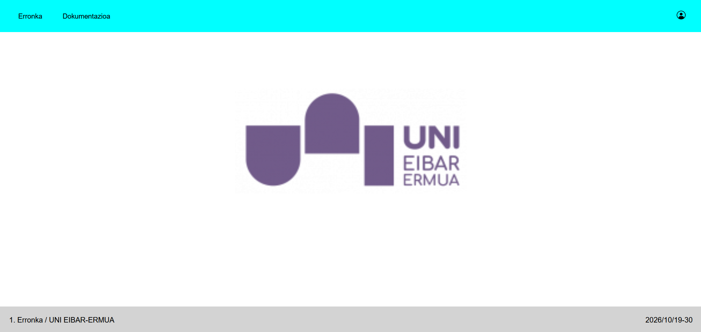
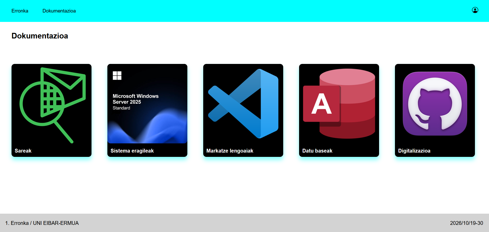

Web Orriaren Garapena - Proiektuaren Dokumentazioa
1. Weborriaren Garapena
Proiektu honen weborria HTML eta CSS erabiliz garatu dugu.


2. Visual Studio Code
2.1. HTML
HTML erabili dugu orriaren egitura definitzeko. Erabilitako elementu eta atributu nagusiak:
- Fitxategi estiloa lotzeako:
<link rel="stylesheet" href="style.css">. - Edukiontzien antolaketa:
>div>elementuak (navbaretafooter). - Nabigazioa:
<ul>,<li>eta<a>elementuak, orri desberdinak lotzeko (index.html,dokumentazioa.html,Saioahasi.html). - Irudiak:
<img>elementua logoa eta erabiltzaile-ikonoa txertatzeko. - Klaseak:
classatributua elementuei estiloa emateko (link,navbar1,erabiltzailea,logo,footer).
2.2. CSS
CSS erabili dugu orriaren diseinua eta itxura definitzeko.
Erabilitako propietate nagusiak:
- Testua:
font-family,font-size,text-decoration,color. - Kutxa-eredua:
margin,padding,height,width,box-sizing. - Koloreak:
background-color,rgb()etacolor. - Itxura:
border-radius,box-shadow. - Kokapena:
position,left,right. - Diseinua:
display,flex-direction,justify-content,align-items.
Selektoreak:
- Etiketa-selektoreak:
body. - Klase-selektoreak:
.navbar,.link,.navbar1,.erabiltzailea,.logo,.footer. - Pseudo-klaseak:
:hover, saguaren gainean jartzean efektuak sortzeko.
2.3. Flexbox
Elementuak antolatzeko Flexbox diseinu-sistema erabili dugu.
body:display: flexetaflex-direction: column, elementuak zutabean antolatzeko..navbar:justify-content: space-betweenetaalign-items: center, loturak ezkerrean eta erabiltzaile-ikonoa eskuinean jartzeko, bertikalki zentratuta..footer:flex-direction: rowetajustify-content: space-between.margin-top: autofooter-ean, orriaren behealdean mantentzeko.min-height: 100vhbody-n, orriak pantailaren altuera osoa har dezan.
2.4. Interaktibitatea eta Efektuak
JavaScript erabili gabe, CSS-ko :hover pseudo-klasea erabili dugu interaktibitatea lortzeko:
- Nabigazio-loturak (
.navbar1:hover): itzala (box-shadow) eta kolore argiagoa. - Erabiltzaile-ikonoa (
.erabiltzailea:hover): efektu bera.
2.5. Fitxategien Antolaketa
1-Erronka-WEB-ORRIA/
├── index.html
├── dokumentazioa.html
| ├── sareak.html
| | └── style_sareak.css
| ├── sistemaeragileak.html
| | └── style_sistemaeragileak.css
| ├── datubaseak.html
| | └── style_datubaseak.css
| └── digitalizazioa.html
| └── style_digitalizazioa.css
├── Saioahasi.html
| | └── style_saioahasi.css
| └── Erregistroa.html
| └── style_erregistroa.css
├── style.css
└── img/
├── erabiltzailea.png
└── infogramak-UNI-45-e1620890341119-1.png